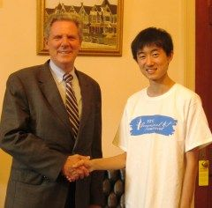
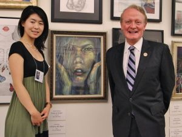

2013“国会艺术大赛”莎伦画院获两个第一名
2013年国会艺术大赛（2013 Annual Congressional Art Competition）颁奖仪式6月26日在美国国会礼堂举行，四名莎伦画院 华生获奖, 分別是Annie Zhao（NJ district 7 第一名）, Dennis Zhang （NJ district 6 第一名），Vicent Chen (6选区 优秀奖) 和John Lu (11选区 优秀奖)。

由美国国会研究院主办的国会艺术大赛始于1982年，今年是第32届。目前有超过69万名9至12年级高中生参与选区级的比赛。首先递交作品至各选区，经艺术裁判小组甄选，头奖作品将在华府国会大厦的Cannon Tunnel走廊展示，供世界各地游客观赏；第二奖作品，将悬掛在议员办公室，展出为期一年。
艺术大赛颁奖仪式由国会研究院（Congressional Institute）主席斯特兰德（Mark Strand）主持，研究院成员阿德霍尔特（Robert Aderholt）以及苏珊‧博纳米奇（Suzanne Bonamici）在颁奖仪式致词，欢迎来自各地的小艺术家以及家长们参加颁奖典礼。

在莎伦画院学习不到四年的Annie Yue Zhao （赵玥），今年第一次参加全美“国会艺术大赛”，以一副油画新作《Refreshed》，斩获第一名（NJ District 7）！新州第七选区国会议员Mr.Leonard Lance在其华盛顿DC的办公室接见和会晤了Annie，对Annie的获奖和取得的艺术成就，不但表示了热诚的祝贺和极大的讚誉，并主动提出要为Annie的大学申请写一封强有力的推荐信。
Annie Yue Zhao 就读新泽西州蒙哥马利高中11年级, 不但品学兼优，还积极参与校内外及社区服务：担任高中“红十字俱乐部”秘书三年至今，同时还是Natinal Art Honor Society成员和 Natinal Honor Society成员；作为校队成员赢得新泽西州高中击剑女子团体亚军； 并通过ABRSM的钢琴8级考试，学琴的同时Annie还是一名特殊的“钢琴音乐老师”：她坚持利用周末时间，以极大的耐心，自愿教授一位有听力障碍的印裔孩子达两年之久（还在继续中）。Annie还把收取的所有钢琴课学费，捐助给所在的“Blue Moon Music”志愿者俱乐部，用来帮助更多的孩子学习音乐 ！
Annie在初入莎伦画院时基础并不太扎实，经过刘莎伦老师悉心帮助，严格指导，无论在绘画技巧还是在艺术领悟力上取得飞速的进步。Annie赢得的第一个绘画艺术奖是去年UMDNJ举办的2012 National Art Program大赛中赢得青年组二等奖的荣誉。今年Annie首次参加“国会艺术大赛”能在众多优秀的竞争者中脱颖而出，斩获第一，虽感几分惊喜，又是功到自然成，意料之中 ！
爱迪生市史帝文斯高中的莎伦华裔学生张大宇（Dennis Zhang）在新州第六区获得第一名, 并在国会办公室得与国会众议员帕隆尼（Frank Pallone) 接见。因为绘画得奖,张大宇已经多次获得众议员帕隆尼 接见。
他是学校荣誉班学生，11年级的成绩全A，学校知识竞赛队的成员、科学联赛队队长，曾带领校队为该校赢得首座新州奥林匹克物理竞赛奖杯。张大宇是学校室内合唱团以及新泽西All State合唱团成员；他的绘画水準更是公认为一流， 刚刚还获得2013年Scholastic艺术比赛全国银牌.是学校校报、年鉴的艺术编辑，还是学校创意思维竞赛董事会成员. 他所在的创意思维竞赛队曾获得2013年新州创意思维比赛第一名, 该队并代表史帝文斯高中参加了2013年的国际比赛。
在莎伦画院推荐下,张大宇担任爱市青少狮会首任会长，带领青少狮会成员参加许多公益活动，连续两年获得总统义工服务奖。
赵玥(Annie Zhao) 得奖的信息被刊登在国会网站上，请参阅： http://lance.house.gov/press-releases/lance-congratulates-7th-district-congressional-art-competitor-annie-zhao-of-belle-mead/
其他莎伦画院得奖学生的信息也依次可以查阅。